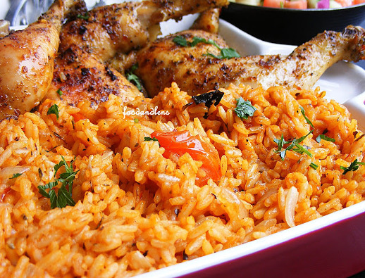

How To Cook Jellof Rice

Each step counts in the preparation of jellof rice. It is very important to build a flavor base. So to that effect, don't be in a haste to dump your ingredients in the pot.
- An unavoidable foundation for building up the flavor in this meal is to start by sauteeing the Onions. This should take about 3 to 5 minutes. After that stir the tomato paste.
- Add the ginger and garlic into the paste tomatoes and cook for another 2 minutes; it is ready by now to avoid burning(it burns easily).
- There is really no particular time frame for frying the blended pepper. I often prefer to stop when the sauce becomes really thhick and the oil literally floats on top of the sauce.
- Finally, i buld my flavor by adding Thyme, Curry powder, Salt, White pepper and Seasoning cubes. Stir in the rice properly until you cover each grain of rice with the sauce. Add the chicken stock now and give it a brief stir and cover it up with a tight lid. This is because Jellof needs a lot of steam in order to turn out well.
- Reduce the heat to medium once the rice comes to a boil immediately and cook until the rice, which should be done in about 20 to 25 minutes.
- Serve with Grilled chicken, Fried chicken, Plaintains etc. 